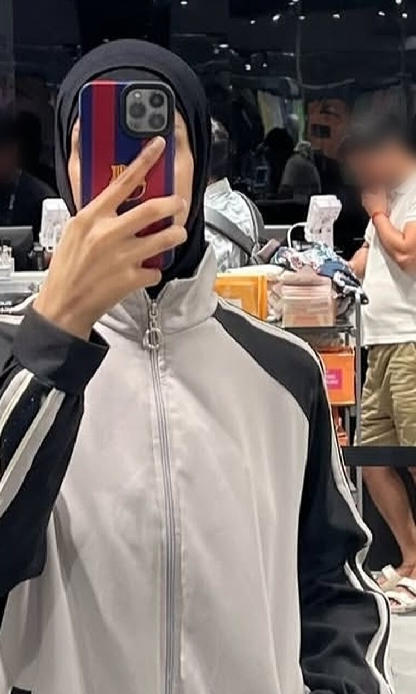

من هي رقية
رقية لؤي كاظم إبراهيم شابة في الحادية والعشرين من عمرها، من محافظة كربلاء المقدسة. في عمرٍ يبدأ فيه الآخرون رسم مستقبلهم، وجدت نفسها في مواجهة مرض خبيث.
استغاثة إنسانية · كربلاء، العراق
قصة إنسانية نعمل من خلالها على إيصال صوت رقية إلى العالم، والتعريف برحلتها العلاجية، وفتح أبواب الأمل أمامها.

01 · قصة رقية
رقية لؤي كاظم إبراهيم شابة في الحادية والعشرين من عمرها، من محافظة كربلاء المقدسة. في عمرٍ يبدأ فيه الآخرون رسم مستقبلهم، وجدت نفسها في مواجهة مرض خبيث.
شُخّصت رقية بساركوما العظام من النمط الأرومي الغضروفي، وهو ورم عظمي خبيث أصاب منطقة الحوض والعجز بالقرب من الفقرات، بحسب تقرير فحص PET/CT.
خضعت لعملية جراحية لاستئصال الجزء المصاب من عظام الحوض، ثم تلقّت إحدى عشرة دورة من العلاج الكيميائي. لكن فحص PET/CT في 9 آب 2026 أظهر أن المرض عاد وتقدّم قرب الفقرات القطنية.
في 21 أيلول 2026 أكّد تقرير مستشفى الإمام الحسن المجتبى التعليمي حاجتها إلى جراحة متقدمة خارج العراق. وتُقدَّر تكاليف رحلتها العلاجية، من علاج وسفر وفحوصات، بنحو 20,000 دولار أمريكي، وهو مبلغ يفوق قدرة عائلتها.
جمعت العائلة التقارير الطبية، ورفعت مناشدة إلى السيد وزير الصحة لإحالة ملفها إلى لجنة الإخلاء الطبي، وإرسالها للعلاج خارج العراق، وتحديداً إلى الهند، إذا تعذّر علاجها داخل البلاد.
أُنشئت هذه المنصة لتكون مرجعاً موثوقاً لقصة رقية: تنشر وثائقها كما هي، وتفصل الحقائق الموثّقة عمّا لا يزال بانتظار القرار، وتوصل استغاثتها إلى كل من يستطيع المساعدة.
02 · التقارير الطبية
تُنشر هذه الوثائق بموافقة عائلة رقية، كما صدرت دون تعديل على محتواها. اضغط على أي وثيقة لعرضها بالحجم الكامل.
لا تُنشر إلا الوثائق التي وافقت عليها العائلة. لا نعرض أرقام هويات أو أرقاماً طبية تعريفية.
03 · الرحلة العلاجية
لا نذكر تاريخاً إلا إذا كان موثّقاً. والمراحل التي لم تُحسم بعد معلَّمة بوضوح.
04 · التحديثات
05 · الاستغاثة الإنسانية
06 · التبرع والدعم
تحتاج رقية إلى رحلة علاجية خارج العراق تشمل الجراحة والسفر والفحوصات، وتُقدَّر تكاليفها الإجمالية بنحو 20,000 دولار أمريكي.
07 · المساهمات والداعمون
نعرض هنا أسماء الأفراد والأطباء والجمعيات والمؤسسات الذين ساهموا في رحلة رقية، بعد التحقق من المساهمة وبإذن صريح من أصحابها.
من يقف خلف هذه المنصة
إبراهيم علي عبد الحسين الشويلي
ساعٍ لإيصال حالة رقية إلى الجهات الطبية والإنسانية والخيرية، ومتابع لنشر استغاثتها.
لم أكن جزءاً من عائلة رقية، لكنني اخترت أن أكون صوتاً يساعد في إيصال معاناتها إلى من يستطيع مساعدتها. دوري هو نقل المعلومات المتاحة عن حالتها، والتعريف بوضعها الطبي والإنساني، والسعي إلى إيصال استغاثتها إلى المؤسسات والجهات المعنية وأصحاب الأيادي البيضاء.
هذه المبادرة ليست بديلاً عن الجهات الطبية أو المؤسسات الخيرية، وإنما محاولة إنسانية للمساعدة في الوصول إليها.
في رحاب الرحمة والإحسان · قال رسول الله ﷺ
09 · أسئلة شائعة
10 · التواصل
للاستفسار عن الحالة، أو التحقق من المعلومات، أو عرض مساعدة طبية أو إنسانية.